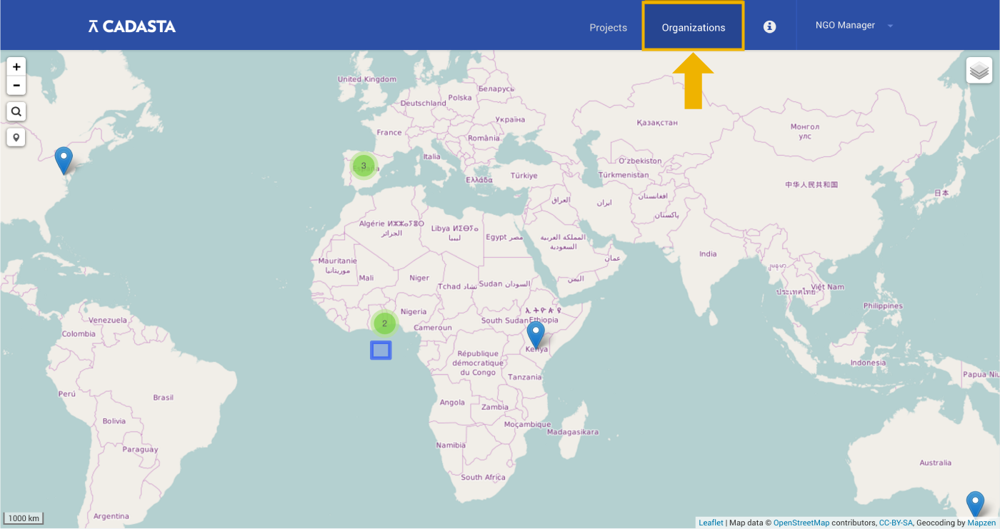

Organizations
- Overview
- Creating a New Organization
- Editing Your Organization's Information
- Adding Organization Members
- Editing Organization Member Permissions
- Removing Organization Members
Overview
Organizations in the Cadasta System represent organizations in the real world – typically NGOs who are working with communities to help them document their land rights and resources. This section outlines how to create and edit organizations in the Cadasta Platform, along with how to add organization members and assign permissions to them.
Creating a New Organization
If your organization doesn't already exist in the Cadasta Platform, then one of the first things you need to do is set up your organization's account. You'll use this account to manage projects, organization members, data collection questionnaires, and more.
1. Log in & Navigate to the Organizations Page
First, log into your account, which will take you to the main Cadasta Platform page. In the upper right, select the Organizations button.

2. Add Your Organization
On the next page, you'll see an index of all the organizations using the Cadasta Platform. To add yours, select Add on the upper right.
3. Enter Your Organization's Information
On the page that follows, provide your organization's name, a brief description, the URL for your organization's website and your own contact information. If you'd like, you can add additional contacts here as well.
NOTE! Adding someone's contact information here does not create user accounts for them within the Cadasta Platform. That is a separate step that they should do on their own. See Getting Started.
Once you hit save...
Congratulations!
You've established an organization within the Cadasta Platform!
As the person who has created the organization, you are now the organization's administrator by default.
Editing Your Organization's Information
Administrators can edit an organization's information from the Organization Overview page. Click on the three dots in the upper right corner of the page, select Edit organization, and then modify the information as needed.
Administrators may also archive their organization by selecting Archive organization from the same menu.
Adding Organization Members
Once an organization is set up, the administrator can add organization members. Members must already have accounts set up on the Cadasta Platform.
To add an organization member, click View All from the Organization Overview page.
Then, click Add, in the upper right hand corner.
A pop-up window will appear. Here, add the member's username or email and click save.
Editing Member Organization Permissions
At the organizational level, there are two levels of permissions: Administrator and Member.
Administrators can edit and archive the organization, as well as add, delete, and edit permissions for organization members.
Members can be added to projects within the organization.
Administrators may change the permissions of an organization member from the Member Profile page using the drop-down menu towards the left side of the page.
Removing Organization Members
Administrators may also remove organization members by clicking the Remove member button on the the Member Profile page.

Note that this will not remove the user account from the Cadasta Platform; only from your organization.